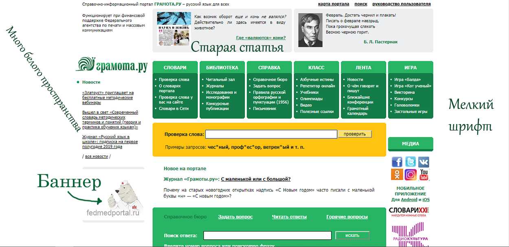

Моё портфолио
Имя: Сельченкова Сюзанна Павловна
Место учёбы: Национальный исследовательный университет "Высшая школа экономики", ОП Филология
Научные интересы: литературоведение, языкознание, музыковедение
Немного о себе: Увлекаюсь рисованием, музыкой (играю на фортепиано).
Как современные технологии могут помочь филологу?
Весь корпус текстов, накопленный за тысячелетия существования человеческой цивилизации (начиная трактатом Панини, древнегреческими
трагедиями и заканчивая фанфиками) полностью изучить невозможно. Однако с помощью современных технологий можно приблизиться к этой утопичной идее. Огромная
база данных, в которую постепенно включаются и существовавшие ранее исключительно в печатном виде тексты, доступна для анализа в любой момент.
Статистика, графики, таблицы - всё это делает информацию наглядной и более доступной, компьютерный подсчёт облегчает работу, онлайн-переводчики
позволяют прочесть новый текст на малознакомом языке.
Что не так с сайтом Грамота.ру?..
- Слишком мелкий шрифт
- Отступы по бокам (чем шире монитор пользователя, тем невыгоднее будет смотреться сайт). Всё слишком сужено, концентрация текста в центре с кусками пустого белого фона по бокам не идёт сайту на пользу...
- Расположенные рядом с основными информативными блоками баннеры сильне отвлекают
- Статьи, выведенные в шапку сайта, датируются 2015 годом - при беглом просмотре возникает чувство, что сайт заброшен

...и что так?
- В целом - понятный интерфейс, всё необходимое можно найти на главной странице
- Ссылка на архив
- Возможность быстро подписаться на e-mail рассылку
- Карта портала - для тех, кто совсем запутался